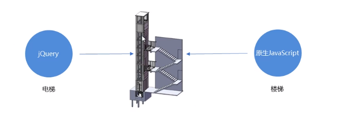
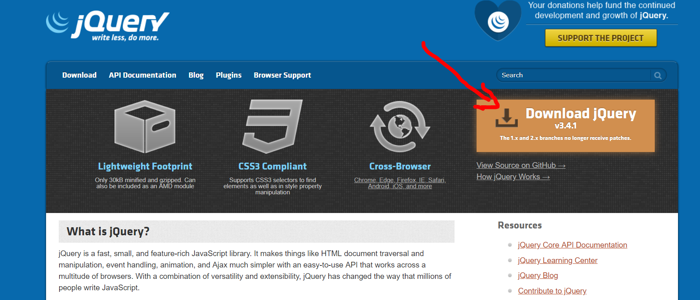
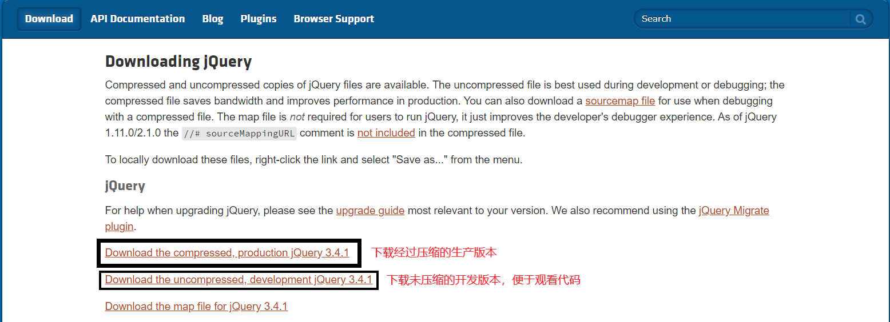

jQuery是一个快速、简洁的JavaScript库，其设计的宗旨是“Write Less，Do More”
jQuery主要是封装了JavaScript常用的功能代码，优化了DOM操作、时间处理、动画设计和Ajax交互。
学习jQuery的本质就是：学习调用这些函数（方法）
jQuery出现的目的就是加快前端人员的开发速度，我们可以灰常方便地调用以及使用它，从而提高开发效率
jQuery与原生js形象比喻

官网网址：https://jquery.com/


版本信息：
1x：兼容IE678等低版本的浏览器，官网不再维护更新
2x：不兼容IE678等低版本的浏览器，官网不再维护更新
3x：不兼容IE678等低版本的浏览器，官网主要维护更新的版本
所有版本的下载网址：https://code.jquery.com/
1.引入jQuery文件
<script type=”text/javascript” href=”jquery.min.js”></script>
其中jquery.min.js是你所下载下来的jQuery文件
2.使用即可
$(function(){
… //此处是页面DOM加载完成的入口
//等着页面DOM加载完毕再去执行js代码
});
$(document).ready(function(){
… //此处是页面DOM加载完成的入口
//等着页面DOM加载完毕再去执行js代码
});
1. $是jQuery的别称，在代码中可以使用jQuery代替$，但一般为了方便，通常直接使用$
$(function(){
alert(11);
});
jQuery(function(){
alert(11);
});
以上代码的结果是一样的
2. $是jQuery的顶级对象，相当于原生js中的window对象。把元素利用$包装成jQuery对象就可以调用jQuery的方法
1. 利用原生js来获取的对象就是DOM对象
var myDiv = document.querySelector(‘div’); //myDiv 是DOM对象
2. 用jQuery方式获取的对象就是jQuery对象。
$(‘div’); // $(‘div’)是jQuery对象
3. jQuery对象的本质：利用$把DOM对象包装后产生的对象（伪数组形式存储）
4. jQuery对象只能使用jQuery方法，DOM对象则使用原生js的属性以及方法
myDiv.style.display=’none’;//正常执行
$(‘div’).style.display=’none’;//执行时会报错
$(‘div’).hide();//正常执行
myDiv.hide();//执行时会报错
（1） 因为原生js比jQuery更大，原生的一些属性和方法jQuery没有给我封装，要想使用这些属性和方法则需要把jQuery对象转换为DOM对象才能使用。
l DOM对象转换为jQuery对象 $(DOM对象)
$(‘div’);
l jQuery对象转换为DOM对象（两种方式）
$(‘div’)[index] index是索引号
$(‘div’).get(index) index是索引号